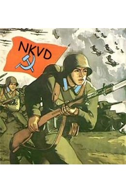
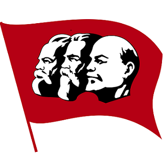
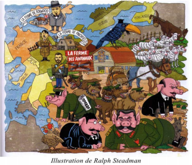

La révolution Russe
Il est difficile de ne pas remarquer les similarités entre la création de l’URSS et l’œuvre de Georges Orwell vue que c’est bel et bien l’intention de l’auteur de critiquer la montée au pouvoir de Staline suite à la Révolution Russe de 1917.
En effet, le peuple exploité et affamé, qui traverse de plus une importante crise économique, n’accepte plus la gouvernance tyrannique du Tsar de Russie Nicolas II comme les animaux de la ferme de Mr Jones. Plusieurs manifestations se déclarent chez les paysans ne supportant plus la misère dans laquelle la Cour Impériale faisait sourde d’oreille.
L’entrée du pays dans la Première Guerre Mondiale, qui aggrave la situation, est pour beaucoup la mèche qui avait mis le feu à la poudre. Que ce soit les paysans, les soldats ou les bourgeois, tous ont l’impression de vivre encore au Moyen Age, surtout le Parti Bolchevik, le parti Ouvrier Social-Démocrate Russe dirigé par Lénine. Lors de la grève générale du 26 février, les troupes du Tsar tire sur la foule tuant plus d’une centaine de manifestants. Cette tragédie mène ainsi à l’abduction du Tsar et la mise en place d’un régime provisoire.
Les Bolchevik s’emparent alors du pouvoir mais non sans déclencher une guerre civile contre les opposants du parti appelé les russes blancs et les paysans après la mise en place du « communisme de guerre », c’est-à-dire le rationnement des produits de grande consommation, la nationalisation des banques, du commerce et des grandes entreprises ainsi que la réquisition des récoltes des paysans.
La guerre civile dura 4 ans et le parti communiste décide de changer quelques peu leur politique en instaurant la NEP (Nouvelle Politique Économique), mettant fin à celle du “communisme de guerre”. Cela atténue donc les tensions permettant à l'économie de se relancer. Lénine meurt en 1924, laissant le parti à Staline et Trotski, Napoléon et Boule de neige dans le livre.
Ces derniers s’opposent sur le commandement du régime. Trotski veut d’une part développer l’industrie pour améliorer le niveau de vie du peuple russe mais aussi continuer sur une “révolution permanente”, c’est à dire d’élargir les idées de la révolution soviétique aux pays voisins. Pour cet homme le seul moyen pour que le nouveau régime russe se maintient c’est que les idées de ce dernier réussissent aussi dans les autres pays. Il voulait les aider en les libérant de leur dépendance au capitalisme.
Staline s’oppose à cette idée de révolution permanente souhaitant rester diplomatique envers les pays voisins. Il commence alors à monter le parti contre Trotski et ses partisans, les accusant de traites ce qui les conduit à l’exil en janvier 1928. Le régime de terreur de Staline débute.
A partir de 1929 de nouvelles décisions politiques sont prises par le parti dont les plans quinquennaux et celles concernant les terres agricoles des paysans. Ces derniers sont contraints de vendre leurs terres à l’Etat à des prix miséreux ce qui provoque un vent de manifestations. Malheureusement, les manifestants sont, comme Trotski, considérés comme des traites aux yeux de l’Etat et près de 2 millions de personnes sont jugées durant les grands procès de Moscou. Ils sont alors exécutés ou déportés vers des terres invivables. Les habitants du pays perdent peu à peu leurs droits comme les animaux de la ferme.
Quand l’ombre de la Seconde Guerre Mondiale commence à être perçu, l’URSS ne prend d’abord aucun parti se contentant de vendre des armes tantôt à un camp, tantôt à l’autre. Par la suite, l’empire soviétique finit par signer un pacte de non-agression avec l’Allemagne en 1939 au moment où la guerre éclate. Mais Hitler viole le pacte le 22 juin 1941 et attaque l’URSS à la grande surprise de Staline. Ce dernier rejoint donc les Alliés pour repousser les allemands et gagnent ainsi la guerre. Grâce à cette victoire, le pouvoir de Staline va encore grandir.
Staline profite de la situation pour renforcer son armée encore plus et par la même occasion de baisser une fois de plus le niveau de vie du peuple qui souffrira d’une grande famine à cause de cela. Mais Staline n’en a que faire, prétextant que c’est un sacrifice nécessaire pour assurer aux pays une puissance suffisante pour se défendre et en plus de cela permettre à son armée d’occuper une bonne partie de l’Europe. Tout comme Staline, les porcs de la ferme s’enrichit au dépend du peuple qui travaille d’arrache-pied pour quelques choses à peine mieux que rien. A la fin, ils sont devenus les soi-disant oppresseurs qu’ils ont combattus.